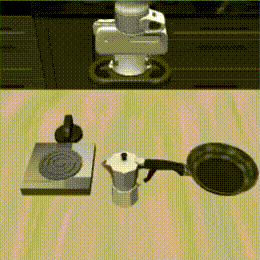
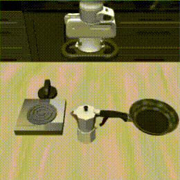

Latent Policy Barrier (LPB) decouples precise expert imitation from OOD recovery by leverages two complementary components: (a) a base diffusion policy trained exclusively on consistent, high-quality expert demonstrations, ensuring precise imitation and high task performance; and (b) an action-conditioned visual latent dynamics model trained on a broader, mixed-quality dataset combining expert demonstrations and automatically generated rollout data. At inference time, if the Euclidean distance between the current latent state and the nearest expert state is below a threshold, LPB defaults to standard action denoising. Otherwise, LPB refines the action denoising process by performing policy steering in the latent space, effectively ensuring that the agent stays within the expert distribution. LPB uses the dynamics model to predict future latent states conditioned on candidate actions output from the base policy, and minimizes the distance between the predicted future latent states and their nearest neighbors from the expert demonstrations in the same latent space. In this way, LPB simultaneously achieves high task performance and robustness, resolving deviations without compromising imitation precision.
Abstract

Visuomotor policies trained via behavior cloning are vulnerable to covariate shift, where small deviations from expert trajectories can compound into failure. Common strategies to mitigate this issue involve expanding the training distribution through human-in-the-loop corrections or synthetic data augmentation. However, these approaches are often labor-intensive, rely on strong task assumptions, or compromise the quality of imitation. We introduce Latent Policy Barrier, a framework for robust visuomotor policy learning. Inspired by Control Barrier Functions, LPB treats the latent embeddings of expert demonstrations as an implicit barrier separating safe, in-distribution states from unsafe, out-of-distribution (OOD) ones. Our approach decouples the role of precise expert imitation and OOD recovery into two separate modules: a base diffusion policy solely on expert data, and a dynamics model trained on both expert and suboptimal policy rollout data. At inference time, the dynamics model predicts future latent states and optimizes them to stay within the expert distribution. Both simulated and real-world experiments show that LPB improves both policy robustness and data efficiency, enabling reliable manipulation from limited expert data and without additional human correction or annotation.

 
